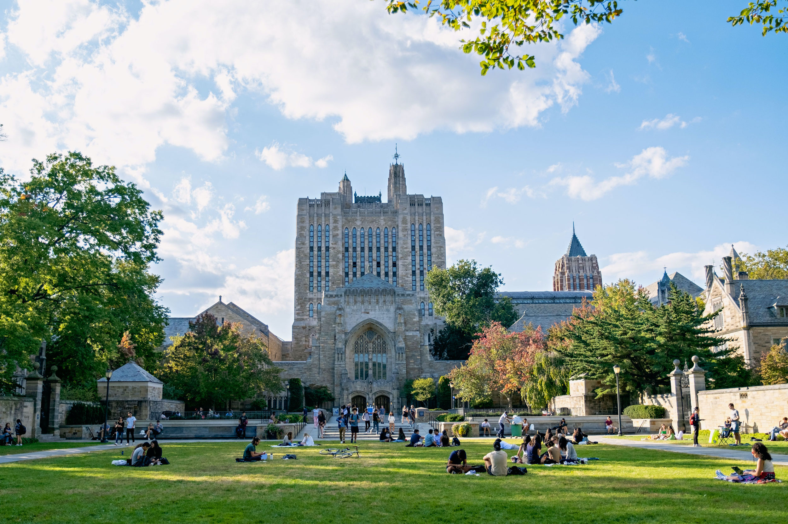

Yale University is one of the 8 Ivy League schools in the United States. Founded in 1701, Yale remains one of the world's top universities.
Here are some facts about Yale University that most people may not know:
| Category | Component | Details |
|---|---|---|
| GPA | 3.9 to 4.0 | This is the average GPA for admitted students. |
| Standardized Testing | 1470-1510 | This is the middle 50% of test scores for admitted students |
| Activities | Any that show commitment and intellectual curiosity | Yale values longevity and impact |
Yale's campus is located in New Haven, Connecticut. It is known for its impeccable Gothic architecture that never goes out of style.

Yale's historic campus is located in New Haven, Connecticut.
Here are three ways to learn more about Yale:
Yale Young Global Scholars (YYGS) is a summer academic program for high school students. It gives students opportunities to explore academic subjects and learn alongside students from around the world. I participated in this program over the summer and grew a deep love for Yale University. I left with new perspectives and connections I wouldn't be able to obtain elsewhere!
Visit the official YYGS website to learn more.
Yale offers a variety of majors. Here are three popular fields students can explore.
Computer science focuses on computers, programming, and technology.
Economics explores how people and societies make decisions about resources.
History is the study of significant events over time.
See more options on Yale's official website.